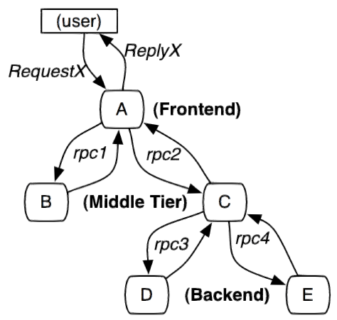
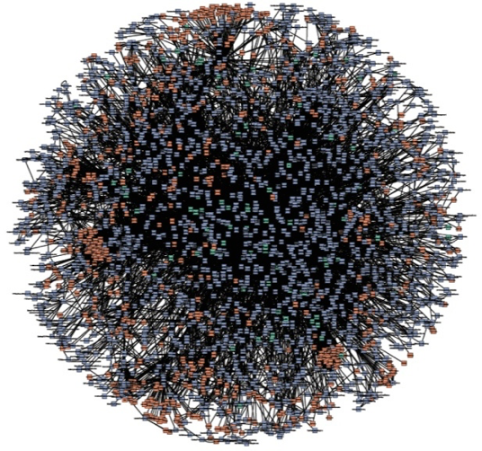
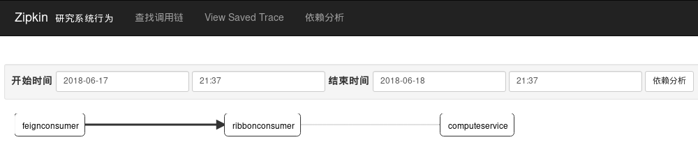
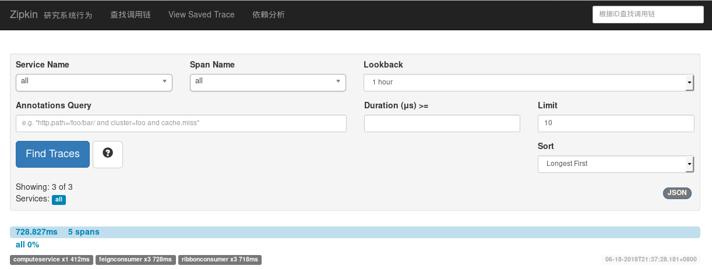
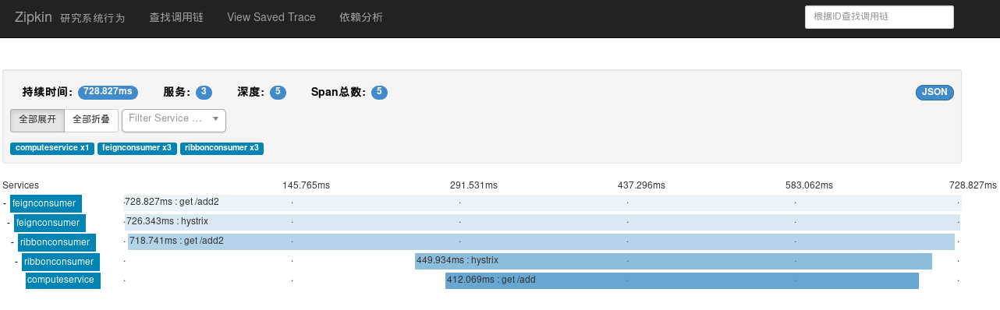

前记
上两章粗略的使用了配置中心和客户端，这一章将开始使用服务链路追踪（Spring Cloud Sleuth）。
服务追踪分析
微服务架构上通过业务来划分服务，通过 REST 调用，对外暴露一个接口，可能需要很多个服务协同才能完成这个接口功能，如果链路上任何一个服务出现问题或者网络超时，都会形成导致接口调用失败。随着业务的不断扩张，服务之间互相调用会越来越复杂。

随着服务的越来越多，对调用链的分析会越来越复杂。它们之间的调用关系也许如下：

术语
Span：基本工作单元。比如，在一个新建的 span 中发送一个 RPC 等同于发送一个回应请求给 RPC，span 通过一个64位ID唯一标识，trace 以另一个64位 ID 表示，span 还有其他数据信息，比如摘要、时间戳事件、关键值注释(tags)、span 的 ID、以及进度 ID(通常是IP地址)。span 在不断的启动和停止，同时记录了时间信息，当你创建了一个 span，你必须在未来的某个时刻停止它。
Trace：一系列 spans 组成的一个树状结构。如果你正在跑一个分布式大数据工程，你可能需要创建一个 trace。
Annotation：用来及时记录一个事件的存在，一些核心 annotations 用来定义一个请求的开始和结束。
- cs（Client Sent），客户端发起一个请求，这个 annotion 描述了这个 span 的开始。
- sr（Server Received），服务端获得请求并准备开始处理它，如果将其 sr 减去 cs 时间戳便可得到网络延迟。
- ss（Server Sent），注解表明请求处理的完成(当请求返回客户端)，如果 ss 减去 sr 时间戳便可得到服务端需要的处理请求时间。
- cr（Client Received），表明 span 的结束，客户端成功接收到服务端的回复，如果 cr 减去 cs 时间戳便可得到客户端从服务端获取回复的所有所需时间。
准备使用
如果是使用的是 Java8 以上的版本，只有这样快速启动 Zipkin：
1 | curl -sSL https://zipkin.io/quickstart.sh | bash -s |
默认的访问网址是：http://localhost:9411
其他启动方式比如 Docker，可以参考 Zipkin 官网文档。
这里沿用之前的三个工程 computeService、feignConsumer 和 ribbonConsumer。
对三个工程进行改造
下面的改造都是一样的，添加依赖和指定 zipkin 地址。
添加依赖：
1 | <dependency> |
配置文件 application.properties 中指定 zipkin 的地址：
1 | spring.zipkin.base-url=http://localhost:9411 |
ribbonConsumer 改造
在原有控制器上加多一个对外接口 /add2：
1 |
|
feignConsumer 改造
添加 RibbonConsumerService 服务：
1 | (value = "ribbonConsumer") |
原有控制器上也添加一个测试接口 /add2：
1 |
|
而且配置文件 application.properties 还需要添加采样比例（默认的可能看不到效果）：
1 | # 将采样比例设置为1.0（全部需要），默认的采样比例为: 0.1 |
测试
然后把工程都启动上：zipkin、eurekaServer、computeService、ribbonConsumer、feignConsumer。
访问 feignConsumer 的接口 /add2：
1 | $ curl http://localhost:9100/add2\?a\=1\&b\=25 |
再打开 http://localhost:9411/ 的界面，点击依赖分析,可以发现服务间的依赖关系：

点击查找调用链,可以看到具体服务相互调用的数据：

